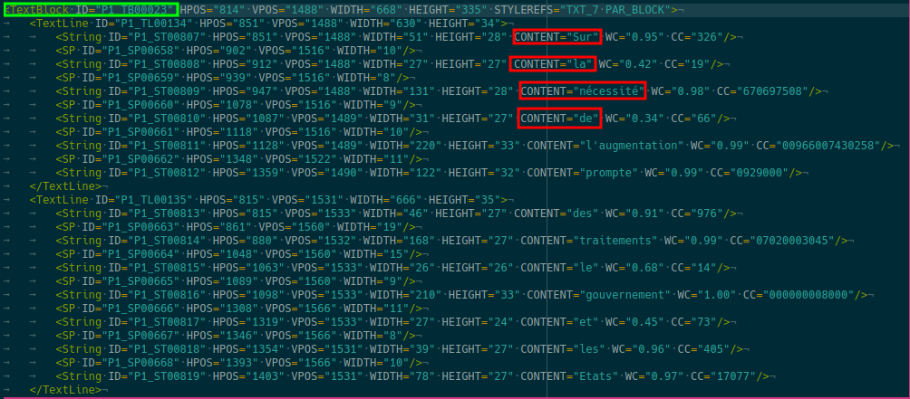
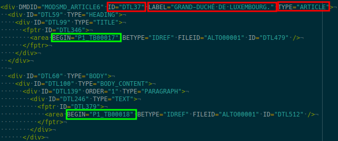
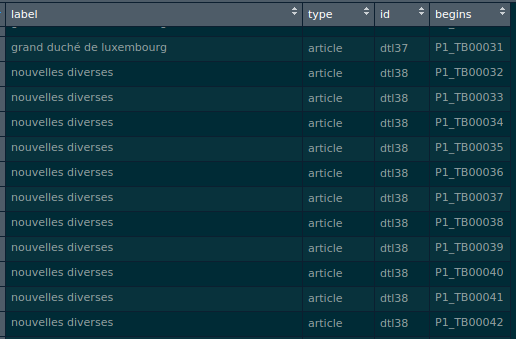
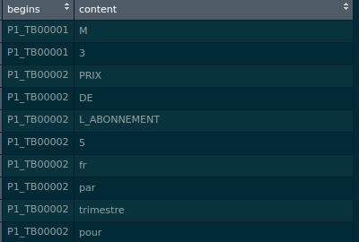

Making sense of the METS and ALTO XML standards
Last week I wrote a blog post where I analyzed one year of newspapers ads from 19th century newspapers. The data is made available by the national library of Luxembourg. In this blog post, which is part 1 of a 2 part series, I extract data from the 257gb archive, which contains 10 years of publications of the L’Union, another 19th century Luxembourguish newspaper written in French. As I explained in the previous post, to make life easier to data scientists, the national library also included ALTO and METS files (which are a XML files used to describe the layout and contents of physical text sources, such as pages of a book or newspaper) which can be easily parsed by R.
This is how a ALTO file looks like:

Each page of the newspaper of a given day has one ALTO file. This is how a METS file looks like:

For each daily issue of the newspaper, there is a METS file. So 1 METS file for 4 ALTO files.
In my last blog post, I only extracted the words from the ALTO file (red rectangles of the first screenshot) and did not touch the METS file. The problem of doing this is that I get all the words for each page, without knowing which come from the same article. If I want to know which words come from the same article, I need to use the info from the METS file. From the METS file I have the ID of the article, and some other metadata, such as the title of the article and the type of the article (which can be article, advertisement, etc). The information highlighted with the green rectangles in the METS file can be linked to the green rectangles from the ALTO files. My goal is to get the following data frame from the METS file:

and this data frame from the ALTO files:

As you can see, by combining both data frames I can know which words come from the same article, which will be helpful for further analysis. A lot of things happened in the 1860s. I am really curious to see if and how these events where reported in a Luxembourguish newspaper. I am particularly curious about how long it took to report certain news from far away, such as the assassination of Abraham Lincoln. But before that I need to extract the data!
I will only focus on the METS file. The logic for the ALTO file is the same. All the source code will be in the appendix of this blog post.
First, let’s take a look at a METS file:
library(tidyverse)
mets <- read_file("1533660_newspaper_lunion_1860-11-14/1533660_newspaper_lunion_1860-11-14-mets.xml")This is how it looks like:
"<?xml version='1.0' encoding='utf-8'?>\r\n<mets xmlns=\"http://www.loc.gov/METS/\" xmlns:mix=\"http://www.loc.gov/mix/v20\" xmlns:mods=\"http://www.loc.gov/mods/v3\" xmlns:xlink=\"http://www.w3.org/1999/xlink\" xmlns:xsi=\"http://www.w3.org/2001/XMLSchema-instance\" LABEL=\"L'UNION. 1860-11-14_01\" OBJID=\"https://persist.lu/ark:/70795/m62fcm\" TYPE=\"Newspaper\" xsi:schemaLocation=\"http://www.loc.gov/METS/ http://www.loc.gov/standards/mets/mets.xsd http://www.loc.gov/mods/v3 http://www.loc.gov/standards/mods/v3/mods-3-6.xsd http://www.loc.gov/mix/v20 http://www.loc.gov/standards/mix/mix.xsd\">\r\n <metsHdr CREATEDATE=\"2010-12-03T20:35:05\" LASTMODDATE=\"2018-05-09T05:35:51Z\">\r\n <agent OTHERTYPE=\"SOFTWARE\" ROLE=\"CREATOR\" TYPE=\"OTHER\">\r\n <name>CCS docWORKS/METAe Version 6.4-3</name>\r\n <note>docWORKS-ID: 101636</note>\r\n </agent>\r\n </metsHdr>\r\n <dmdSec ID=\"MODSMD_COLLECTION\">\r\n <mdWrap LABEL=\"Bibliographic meta-data of the collection\" MDTYPE=\"MODS\" MIMETYPE=\"text/xml\">\r\n <xmlData>\r\n <mods:mods>\r\n <mods:identifier type=\"local\">lunion</mods:identifier>\r\n <mods:titleInfo ID=\"MODSMD_COLLECTION_TI1\" xml:lang=\"fr\">\r\n <mods:title>L'UNION.</mods:title>\r\n </mods:titleInfo>\r\n </mods:mods>\r\n </xmlData>\r\n </mdWrap>\r\n </dmdSec>\r\n <dmdSec ID=\"MODSMD_SECTION1\">\r\n <mdWrap MDTYPE=\"MODS\" MIMETYPE=\"text/xml\">\r\n <xmlData>\r\n <mods:mods>\r\n <mods:titleInfo ID=\"MODSMD_SECTION1_TI1\" xml:lang=\"fr\">\r\n <mods:title>Chemins de fer. — Service d'hiver.</mods:title>\r\n </mods:titleInfo>\r\n <mods:language>\r\n <mods:languageTerm authority=\"rfc3066\" type=\"code\">fr</mods:languageTerm>\r\n ...."
As usual when you import text files like this, it’s always a good idea to split the file. I will split at the “DMDID” character. Take a look back at the second screenshot. The very first tag, first row, first word after div is “DMDID”. By splitting at this level, I will get back a list, where each element is the content of this div DMDID block. This is exactly what I need, since this block contains the information from the green rectangles. So let’s split the mets variable at this level:
mets_articles <- mets %>%
str_split("DMDID") %>%
flatten_chr()
Let’s take a look at mets_articles:
str(mets_articles) chr [1:25] "<?xml version='1.0' encoding='utf-8'?>\r\n<mets xmlns=\"http://www.loc.gov/METS/\" xmlns:mix=\"http://www.loc.g"| __truncated__ ...
Doesn’t seem to be very helpful, but actually it is. We can see that mets_articles is a now a list of 25 elements.
This means that for each element of mets_articles, I need to get the identifier, the label, the type (the red rectangles from the screenshot), but also the information from the “BEGIN” element (the green rectangle).
To do this, I’ll be using regular expressions. In general, I start by experimenting in the console, and then when things start looking good, I write a function. Here is this function:
extractor <- function(string, regex, all = FALSE){
if(all) {
string %>%
str_extract_all(regex) %>%
flatten_chr() %>%
str_extract_all("[:alnum:]+", simplify = FALSE) %>%
map(paste, collapse = "_") %>%
flatten_chr()
} else {
string %>%
str_extract(regex) %>%
str_extract_all("[:alnum:]+", simplify = TRUE) %>%
paste(collapse = " ") %>%
tolower()
}
}
This function may seem complicated, but it simply encapsulates some pretty standard steps to get the data I need. I had to consider two cases. The first case is when I need to extract all the elements with str_extract_all(), or only the first occurrence, with str_extract(). Let’s test it on the first article of the mets_articles list:
mets_articles_1 <- mets_articles[1]extractor(mets_articles_1, "ID", all = FALSE)## [1] "id"
Let’s see what happens with all = TRUE:
extractor(mets_articles_1, "ID", all = TRUE)## [1] "ID" "ID" "ID" "ID" "ID" "ID" "ID" "ID" "ID" "ID" "ID" "ID" "ID" "ID"
## [15] "ID" "ID" "ID" "ID" "ID" "ID" "ID" "ID" "ID" "ID" "ID" "ID" "ID" "ID"
## [29] "ID" "ID" "ID" "ID" "ID" "ID" "ID" "ID" "ID" "ID" "ID" "ID" "ID" "ID"
## [43] "ID" "ID" "ID" "ID" "ID" "ID" "ID" "ID" "ID" "ID" "ID" "ID" "ID" "ID"
## [57] "ID" "ID" "ID" "ID" "ID" "ID" "ID" "ID" "ID" "ID" "ID" "ID" "ID" "ID"
## [71] "ID" "ID" "ID" "ID" "ID" "ID" "ID" "ID" "ID" "ID" "ID" "ID" "ID" "ID"
## [85] "ID" "ID" "ID" "ID" "ID" "ID" "ID" "ID" "ID" "ID" "ID" "ID" "ID" "ID"
## [99] "ID" "ID" "ID" "ID" "ID" "ID" "ID" "ID" "ID" "ID" "ID" "ID" "ID" "ID"
## [113] "ID" "ID" "ID" "ID" "ID" "ID" "ID" "ID" "ID" "ID" "ID" "ID" "ID" "ID"
## [127] "ID" "ID" "ID" "ID" "ID"This seems to work as intended. Since I need to call this function several times, I’ll be writing another function that extracts all I need:
extract_mets <- function(article){
id <- article %>%
extractor("(?<=ID)(.*?)(?=LABEL)")
label <- article %>%
extractor("(?<=LABEL)(.*?)(?=TYPE)")
type <- article %>%
extractor("(?<=TYPE)(.*?)(?=>)")
begins <- article %>%
extractor("(?<=BEGIN)(.*?)(?=BETYPE)", all = TRUE)
tibble::tribble(~label, ~type, ~begins, ~id,
label, type, begins, id) %>%
unnest()
}
This function uses complex regular expressions to extract the strings I need, and then puts the result into a data frame, with the tibble() function. I then use unnest(), because label, type, begins and id are not the same length. label, type and id are of length 1, while begins is longer. This means that when I put them into a data frame it looks like this:
tribble(~a, ~b,
"a", rep("b", 4))## # A tibble: 1 x 2
## a b
## <chr> <list>
## 1 a <chr [4]>
With unnest(), I get a nice data frame:
tribble(~a, ~b,
"a", rep("b", 4)) %>%
unnest()## # A tibble: 4 x 2
## a b
## <chr> <chr>
## 1 a b
## 2 a b
## 3 a b
## 4 a bNow, I simply need to map this function to all the files and that’s it! For this, I will write yet another helper function:
mets_csv <- function(page_path){
page <- read_file(page_path)
doc_name <- str_extract(page_path, "(?<=/).*")
mets_articles <- page %>%
str_split("DMDID") %>%
flatten_chr()
mets_df <- map_df(mets_articles, extract_mets)
mets_df <- mets_df %>%
mutate(document = doc_name)
write_csv(mets_df, paste0(page_path, ".csv"))
}This function takes the path to a METS file as input, and processes it using the steps I explained above. The only difference is that I add a column containing the name of the file that was processed, and write the resulting data frame directly to disk as a data frame. Finally, I can map this function to all the METS files:
# Extract content from METS files
pages_mets <- str_match(list.files(path = "./", all.files = TRUE, recursive = TRUE), ".*mets.xml") %>%
discard(is.na)
library(furrr)
plan(multiprocess, workers = 8)
tic <- Sys.time()
future_map(pages_mets, mets_csv)
toc <- Sys.time()
toc - tic
I use {furrr} to extract the data from all the files in parallel, by putting 8 cores of my CPU to work. This took around 3 minutes and 20 seconds to finish.
That’s it for now, stay tuned for part 2 where I will analyze this fresh data!
Appendix
extract_alto <- function(article){
begins <- article[1] %>%
extractor("(?<=^ID)(.*?)(?=HPOS)", all = TRUE)
content <- article %>%
extractor("(?<=CONTENT)(.*?)(?=WC)", all = TRUE)
tibble::tribble(~begins, ~content,
begins, content) %>%
unnest()
}
alto_csv <- function(page_path){
page <- read_file(page_path)
doc_name <- str_extract(page_path, "(?<=/text/).*")
alto_articles <- page %>%
str_split("TextBlock ") %>%
flatten_chr()
alto_df <- map_df(alto_articles, extract_alto)
alto_df <- alto_df %>%
mutate(document = doc_name)
write_csv(alto_df, paste0(page_path, ".csv"))
}
alto <- read_file("1533660_newspaper_lunion_1860-11-14/text/1860-11-14_01-00001.xml")
# Extract content from alto files
pages_alto <- str_match(list.files(path = "./", all.files = TRUE, recursive = TRUE), ".*/text/.*.xml") %>%
discard(is.na)
library(furrr)
plan(multiprocess, workers = 8)
tic <- Sys.time()
future_map(pages_alto, alto_csv)
toc <- Sys.time()
toc - tic
#Time difference of 18.64776 mins